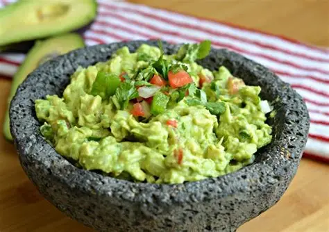

TAQUERIA EL CHATO
tacos muy buenos y ricos
regresar
Ingredientes
2 a 3 aguacates maduros
1 limón o lima (su jugo)
½ cebolla blanca o morada picada finamente
1 jitomate o tomate pequeño, picado en cubitos
Cilantro fresco al gusto, picado
Sal al gusto
Opcional: chile serrano picado para un toque picante
Preparación
Abrir y machacar los aguacates: Corta los aguacates por la mitad, retira el hueso y saca la pulpa. Machaca con un tenedor hasta obtener la textura deseada, cremosa o con trozos pequeños.
Agregar limón: Vierte el jugo de limón o lima sobre el aguacate para darle sabor y ayudar a que no se oxide rápidamente.
Incorporar los vegetales: Añade la cebolla, el jitomate y el cilantro picados. Mezcla suavemente para que se integren.
Condimentar: Agrega sal al gusto y, si deseas, el chile picado para un toque picante.
Servir inmediatamente: Para mantenerlo fresco y evitar que se ponga negro, guarda el guacamole en un recipiente hermético y presiona film transparente sobre su superficie si no se va a consumir al instante
